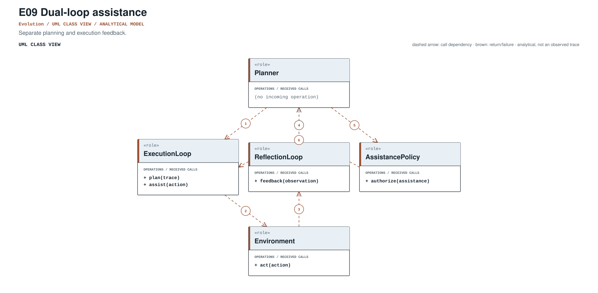
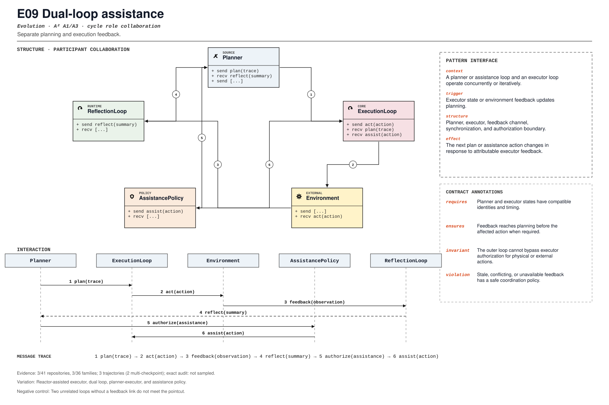

PROMPT SKETCH
Link planner and executor state with compatible identities and timing. Deliver corrective feedback before the affected action when the reactor's deadline requires it.Separate planning and execution feedback.
planner_executor_feedback_linkRECORD STATUSCandidate · v0.1.0The proposed contract drawn as participant roles, received calls, and numbered dependencies.

The same roles and calls as a class collaboration and a numbered message sequence.

Where the mechanism applies. All four dimensions belong to the proposed match, not just its vocabulary.
The obligation that clients, operators, and auditors should be able to rely on.
Two unrelated loops without a feedback link do not meet the pointcut.
The hot spot is admitted only where the protected semantics survive.
Reactor-assisted executor, dual loop, planner-executor, and assistance policy.
Test feedback timing, stale feedback, authorization, and loop termination.
Did assistance move from periodic prompting to a synchronized outer loop?
An illustrative prompt and a small design sketch for the proposed contract. Names and APIs are invented; this is not a repository excerpt.
Link planner and executor state with compatible identities and timing. Deliver corrective feedback before the affected action when the reactor's deadline requires it.def assist(plan, execution, reactor):
for step in execution.pending():
hint = reactor.observe(plan.state, step)
if hint and hint.deadline <= step.start:
plan = plan.with_hint(hint)
execution = execution.revise(step, hint)
return execution.finish(plan)Illustrative design sketch. Assistance is a timing contract; late feedback is a postmortem, not a correction. This example is a teaching aid, not implementation evidence or a conformance claim.
The frozen rule that retrieves this record, the canonical source exemplar, and the control that should stay unmatched.
planner_executor_feedback_link(?i)\b(?:dual[_-]?loop|planner[_-]?executor|assistance[_-]?loop|planning[_-]?feedback)\bFrozen expression, v0.1.0. A match is a retrieval cue, not a confirmed implementation.src/carryon/main.py:176Support: README.md:43Scope-anchored review. pohe-agent analyze <repo> --pattern E09 anchors the cue to its enclosing declaration and checks a separate operational signature for all four pointcut dimensions. Missing roles and negative-control risks remain visible; a structural match is not E2/E3. Calibration report ↗
Up to five public files retrieved by the frozen cue and pinned to the audited commit. A match is a place to inspect, not a confirmed implementation.
src/carryon/main.py:176CANONICAL SOURCE02crewAIInc/crewAIlib/crewai/tests/cassettes/agents/TestResponseFormatWithKickoff.test_kickoff_response_format_with_planning_and_tools.yaml:1222RETRIEVAL CUE03mingju-c/HarnessForgeHarnessForge_4B/harness_factory/rounds/round_00_base/harness3/Description.md:8RETRIEVAL CUEEach layer answers a different question. Do not substitute retrieval for review.
A concrete source anchor is available for this proposed record. It is one exemplar, not evidence that all repositories—or every contract field—conform.
Review boundary: this candidate and its specification come from an AI-assisted study. Independent human validation remains open.
8.3% of repository families in the frozen panel have at least one current cue, historical cue, or canonical source layer. This is not confirmed prevalence.
Current lexical-cue repositories: 3 / 4102c97b80987csrc/carryon/main.py:176README.md:43Reactor closes event-feedback-planning-dispatch loop alongside execution.
(?i)\b(?:dual[_-]?loop|planner[_-]?executor|assistance[_-]?loop|planning[_-]?feedback)\bThis expression is a discovery instrument only. A match is a retrieval cue—not a confirmed implementation, pointcut match, or contract proof.